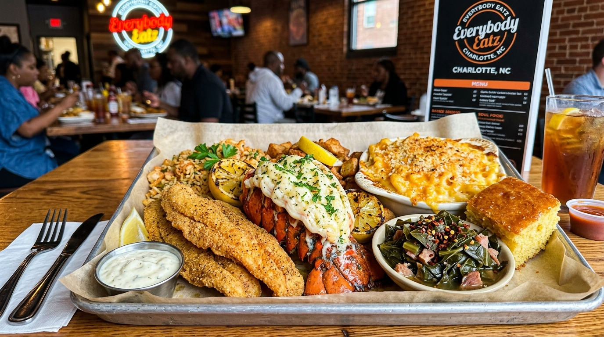

1. The Breath of the Wok (Wok Hei)
Tossing fresh ingredients in seasoned hand-hammered carbon steel woks over roaring high-output flame to impart subtle smokiness and crispness.
Authentic Szechuan cuisine is a masterclass in balance. The legendary sensation of "Mala" combines the tongue-tingling numbing citrus notes of Sichuan peppercorns (Ma) with the radiant heat of roasted dried red chilies (La), elevated by the smoky breath of high-heat wok tossing.

Tossing fresh ingredients in seasoned hand-hammered carbon steel woks over roaring high-output flame to impart subtle smokiness and crispness.
Sourcing genuine red and green peppercorns from Sichuan province to deliver the electrifying citrusy tingling sensation unique to Chengdu cooking.
Using fermented broad bean chili paste aged in earthenware urns as the foundational umami backbone for our Mapo Tofu and spicy stews.